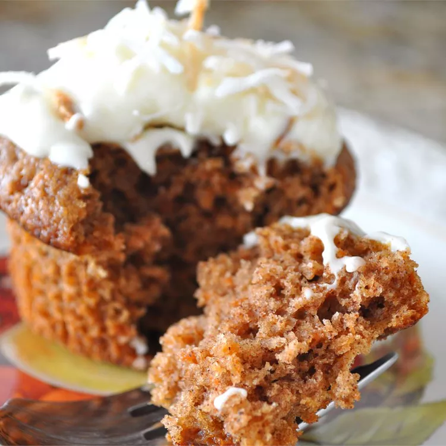

Carrot Cake

Description
A delicous, low fat alternative to your average carrot cake
Ingredients
- 1 cup cake flour
- 1 cup whole wheat flour
- 1 cup brown sugar
- 1/2 cup white sugar
- 1 teaspoon baking powder
- 1 teaspoon baking soda
- 1 1/2 teaspoons ground cinnamon
- 3 eggs
- 1/3 cup vegetable oil
- 2/3 cup buttermilk
- 1 1/2 cups grated carrots
Instructions
- Preheat oven to 350 degrees F (175 degrees C). Lightly grease and flour one 9x13 inch pan or two 9 inch round cake pans.
- Separate eggs and beat egg whites until frothy, then continue whipping and gradually add 1/2 cup of the white sugar. Beat until stiff.
- In a large bowl combine; the cake flour, wheat flour, brown sugar, baking powder, baking soda, and cinnamon, mix until blended. Add the oil and the buttermilk and mix well. Add the egg yolks and mix well. Fold in the egg whites and then the carrots. Pour batter into prepared pan.
- Bake at 350 degrees F (175 degrees C) for 25 to 35 minutes. Cool and frost with your favorite Cream Cheese frosting using light cream cheese.